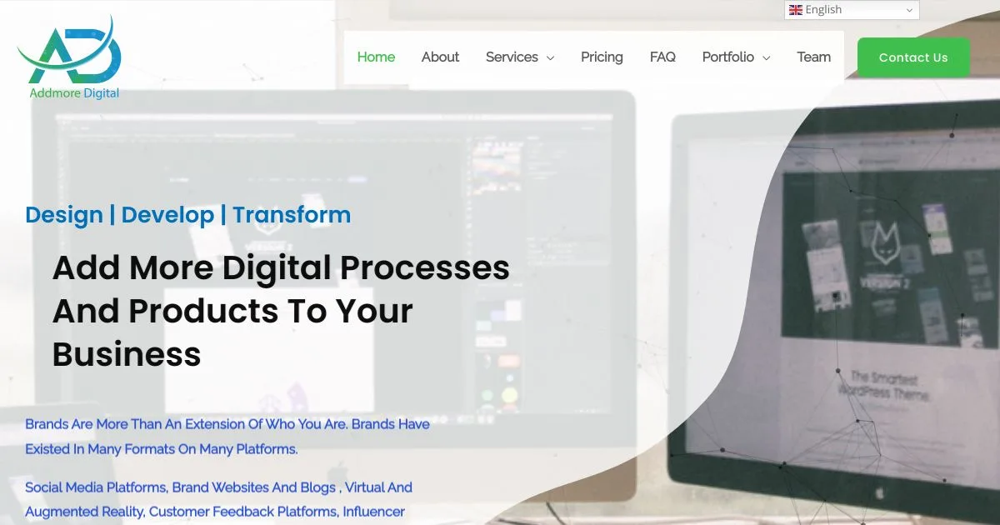
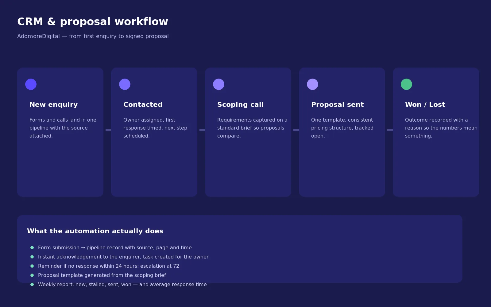
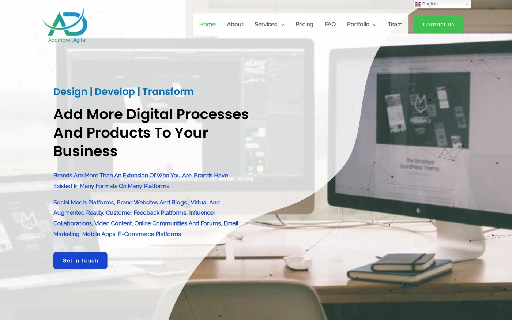
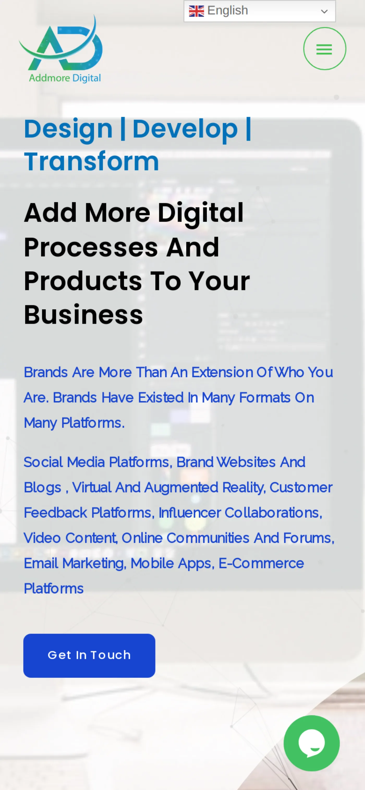

What the business needed
- Make the work the first thing a visitor sees and the reason they enquire.
- State scope and outcomes so enquiries arrive qualified.
- Standardise proposals and track every enquiry to a decision.

In 2021 AddmoreDigital was a small agency winning work on reputation alone. The site was out of date, none of the service pages ranked, and enquiries piled up in a shared inbox. As the agency's lead UI/UX designer I took the whole job: positioning, pages, on-page SEO, and the CRM the contact form feeds. An enquiry now has an owner, a stage and a next step.
A site that presents the work, ranks for it — and follows every enquiry up.
AddmoreDigital does the work. The problem was that nothing on the site proved it — the portfolio was scattered, the services read as a list of words, and every enquiry restarted the same conversation about what the agency does and what it costs.
I redesigned the site around the work and the offer: a portfolio-led structure with services stated plainly (web design, brand, CRM and retainers), then implemented the CRM and proposal workflow behind it — enquiry capture, stages, ownership, follow-up automation and a repeatable proposal path.
The site and the pipeline were built as one system, because an agency that cannot show its work and cannot follow up is competing on price alone.
The work moved from discovering the gap and defining a qualified enquiry, through a service-first information structure and interface design, into end-to-end CRM workflow checks and launch measurement. SEO and CRM integration were part of the build.
Website design, SEO foundations and CRM implementation by LulaMile, Lead UI/UX Designer at AddMoreDigital (2021).
The problem

Design strategy
Role & responsibilities
Our users
Two audiences: the client judging the work, and the team who has to convert the enquiry.
Personas
Compares two or three agencies on craft, clarity and how easy they are to deal with.
When I am choosing an agency, I want to see the standard of the work and understand what a project involves, so I can shortlist without a discovery call.
Sells, scopes and delivers, and cannot afford to lose a lead to a missed follow-up.
When a new enquiry comes in, I want it assigned, staged and scheduled for follow-up automatically, so the pipeline runs while I am on delivery.
Design process
The supplied UX reference frames a case study as Discover → Define → Ideate → Design → Testing. The timeline below is specific to this engagement; build, launch and measurement appear where they were part of delivery. For AddmoreDigital, the visitor decision and page order shaped the site before visual design, with SEO and CRM integrated into the build.

What does the agency do, who is it for, and what does a prospective client need before making contact?
I inventoried the service and portfolio pages, reviewed competing agency sites, and mapped the route from search to the first brief. The gap was not the work itself; it was the story connecting each service to its proof.
In practice: Content inventory · competitor review · enquiry-path mapping
Prospects needed to judge the work and understand the scope; the agency needed every enquiry owned and followed up.
The design strategy joined those needs: put portfolio proof beside a plain service offer, explain what a project involves, and give the contact flow a clear next step rather than another shared inbox.
In practice: Problem statement · business goals · audience needs
Give every service a clear place and make the path to a brief easy to follow.
The sitemap gave each service its own page, put portfolio proof beside the offer, and ordered case studies around brief, execution and result. Page briefs set the priorities; wireframes mapped search → service → brief before the visual design began.
In practice: Information architecture · sitemap · page briefs · enquiry flow
Make scope, outcomes and the next action clear at every point a prospect is ready to decide.
Wireframes and high-fidelity design put the work first: each service states its scope and outcome, case studies carry the proof, and one clear enquiry action returns at the decision point. A reusable visual system keeps the pages coherent.
In practice: Wireframes · high-fidelity interface design · reusable visual system
Check that a mobile enquiry can move from form submission to follow-up without disappearing into an inbox.
I built the responsive site, editable CMS, on-page SEO and CRM workflow together. Before launch, I tested the mobile journey through the CRM record, acknowledgement and follow-up; Search Console and GA4 then supported post-launch measurement and iteration.
In practice: Responsive build · end-to-end workflow check · analytics
Impact
The site now leads with the work and states the services plainly, so prospects arrive knowing what the agency does and roughly what a project involves. Enquiries dropped, but the ones arriving are qualified.
Behind it, the CRM carries every enquiry through New enquiry, Contacted, Proposal sent and Won, with ownership and follow-up automation, and proposals were standardised into a repeatable structure. Proposal turnaround shortened because the scoping language already existed, and the agency can finally answer how many opportunities are open and what needs attention today.
The live product


No handover between three suppliers, so the site, the search work and the pipeline were built to fit each other.
Every form submission creates a record with an owner, a stage and a reminder.
Copy and structure rebuilt around the words people actually type, with metadata and internal links to match.
The team adds work and services themselves, without coming back to me.
The live site is addmoredigital.co.za. Happy to walk through the site structure, the SEO work, the CRM stages and the proposal workflow on a call.